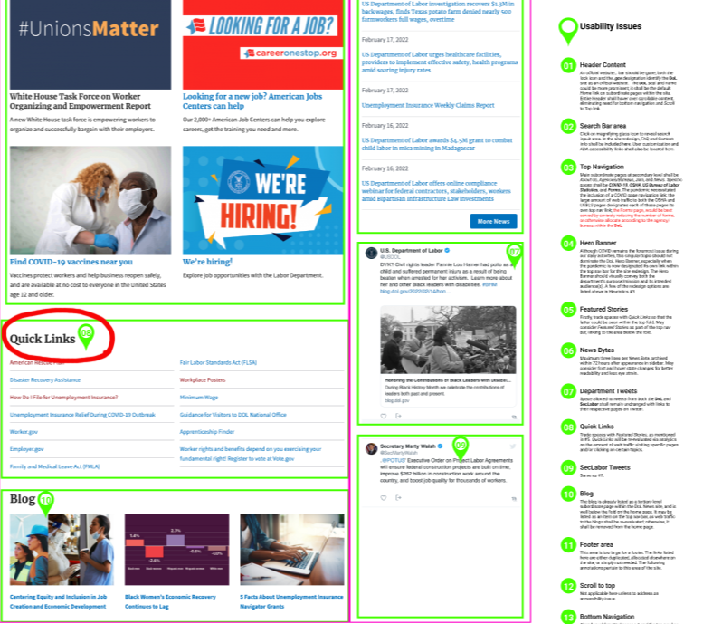

Who? What? Where? When? Why?
Let’s reframe the website as a design brief: The intended audience (who) for the DOL website are U.S. wage earners, job seekers, and retirees; as the cyber incarnation of the DOL, the website could (what) enable users to improve working conditions, advance opportunities for profitable employment, and assure work-related benefits. Users reach the website and access its services (where) on the Internet, (how) via desktops and portable devices, and it is available anytime—24/7/365 (when).
But does the website provide a positive user experience?
Heuristic Evaluations
My initial heuristic review of the homepage revealed usability challenges. The current page’s design is inelegant, having no discernible color scheme, meaningful images, or relevant content above the fold on topics within the DOL purview. COVID, an issue better suited for HealthData.gov, dominates the hero banner instead of COBRA or OSHA. A tap on any navbar item reveals a long list of sublevel pages that offer no helpful wayfinding guidance. There are FAQ and Search features, but they often lead users to intrasite link farms.

Below the Fold: Students were placed into several groups charged with redesigning a website from a list of federal government agencies; my group chose the Department of Labor. During the five weeks given to complete the assignment, students learned and applied UI fundamentals and best practices such as usability & accessibility heuristics, UI systems & navigation, and UI & A/B testings. Deliverables included documentation of various UI research methods during the assignment’s discovery phase, a style guide ensuring consistency of various branding components, high-fidelity clickable mobile and desktop prototypes (plus iterations).

Jobs to Be Done
I recently discovered a methodology that formats several user activities as jobs to be done (JTBD): When I ___, I want to ___ so I can ___. Services offered by the USDOL range from unemployment health insurance coverage (COBRA), working environment safeguards (OSHA), and predictions on emerging jobs/careers. I defined three primary jobs visitors can do:
- When I visit the USDOL site, I want to find OSHA so I can file a workplace violation complaint form.
- When I visit the USDOL site, I want to fill out a COBRA form, so I can receive health insurance during my unemployment while I look for a new job.
- When I visit the USDOL site, I want to find out which jobs will be in demand in five-ten years so I can plan my life before I graduate high school/college.
I employed these activities as tasks in
usability tests to gauge how quickly users complete each task and to reveal any challenges that they may encounter.
Phillip
Last updated 3 mins ago
Ellen-Sue
Last updated 3 mins ago
Usability Tests
Usability Issues: Students were placed into several groups charged with redesigning a website from a list of federal government agencies; my group chose the Department of Labor. During the five weeks given to complete the assignment, students learned and applied UI fundamentals and best practices such as usability & accessibility heuristics, UI systems & navigation, and UI & A/B testings. Deliverables included documentation of various UI research methods during the assignment’s discovery phase, a style guide ensuring consistency of various branding components, high-fidelity clickable mobile and desktop prototypes (plus iterations).
Jada
Last updated 3 mins ago
Taki
Last updated 3 mins ago
Affinity Map
Usability Issues: Students were placed into several groups charged with redesigning a website from a list of federal government agencies; my group chose the Department of Labor. During the five weeks given to complete the assignment, students learned and applied UI fundamentals and best practices such as usability & accessibility heuristics, UI systems & navigation, and UI & A/B testings. Deliverables included documentation of various UI research methods during the assignment’s discovery phase, a style guide ensuring consistency of various branding components, high-fidelity clickable mobile and desktop prototypes (plus iterations).